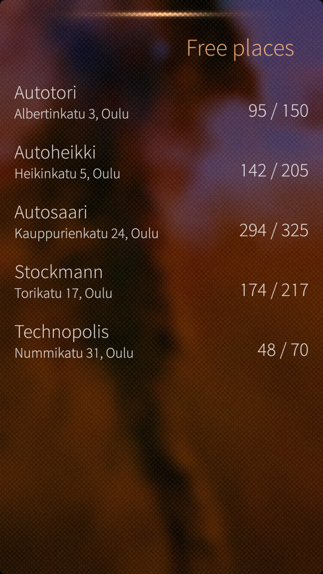
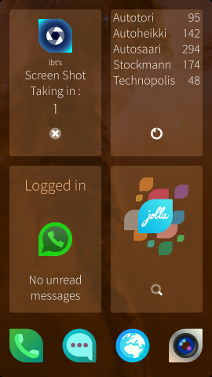

Reservations statuses of parking halls is retrieved from open data provided by the City of Oulu.
Application provides short summary of free places in the cover page and a little more detailed information at actual application page. Pull down menu contains actions for refreshing view.
 Downloads
- harbour-carpark-oulu-0.2-1.armv7hl.rpm
- Finnish translations for UI
- Fix refreshing xml data
- Style fixes to margins and pulldown menu
- harbour-carpark-oulu-0.1-1.armv7hl.rpm